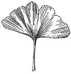
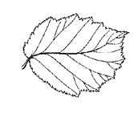

Die Herbar CD-ROM Version 1 war erfolgreich, die Studierenden haben viel und auch gerne damit gearbeitet. In verschiedenen Evaluationen wurden aber Mängel und Ergänzungswünsche geäussert. Diese konnten bei der Überarbeitung für die Version 2 zu einem grossen Teil eliminiert resp. verwirklicht werden. Die wichtigsten Neuerungen sind die folgenden:
Die Herbar CD-ROM Version 2 ist auf den Unterricht in Systematischer Botanik an der ETH Zürich ausgerichtet. Dieser Unterricht wird von Studierenden der Studiengänge Agrarwissenschaften, Biologie, Forstwissenschaften, Lebensmittelwissenschaften, Pharmazeutische Wissenschaften und Umweltnaturwissenschaften besucht. Neu umfasst aber die CD (wie auch das kürzlich neu erschienene Buch "Systematische Botanik") mit der fast verdoppelten Artenzahl weit mehr als nur einen möglichen Prüfungsstoff dieses Faches (Teil Artenkenntnisse). Dies ermöglicht es den verantwortlichen Dozierenden, den Prüfungsstoff gemäss den von ihnen gestellten Anforderungen und den jeweiligen Jahresprogrammen auf der Basis der CD einschränkend immer wieder neu zu definieren.
Auch die hier vorliegende Herbar CD-ROM Version 2 ist ein Instrument, um den in Vorlesungen und Übungen und vor allem auf den Exkursionen angeeigneten Stoff zu repetieren und zu vertiefen. Die CD ist kein Ersatz für die Exkursionen; kein noch so gut gestaltetes Lehrmittel ersetzt das persönliche Erlebnis in der Natur! Das Lehrmittel CD-ROM bietet aber die Möglichkeit, dezentral und zu jeder beliebigen Zeit am Prüfungsstoff zu arbeiten.
Die Prüfung in diesem Fach wird zur Zeit mit Herbarpflanzen durchgeführt. Deshalb sind Bilder von Herbarbelegen wiederum ein wesentlicher Bestandteil der hier vorliegenden CD. Neben den Herbarbildern sind eine grosse Zahl weiterer Bilder von Pflanzen am Standort sowie Detailaufnahmen und Ökologiebilder integriert. Die Herbar CD-ROM richtet sich in erster Linie an Studierende von Hochschulen (insbesondere der ETH Zürich). Darüber hinaus bietet die CD für Schulen viele Möglichkeiten, insbesondere die auf der CD integrierte Version mit den deutschen Namen. Lehrkräfte können ihr Botanik-Grundwissen schnell und einfach auffrischen und erweitern. Für alle Natur- und Pflanzenfreunde bietet die interaktive Herbar CD-ROM eine ausgezeichnete Möglichkeit, sich in die Grundlagen der Pflanzensystematik anhand von Arten aus der Schweiz einzuarbeiten und wichtige Arten unserer Flora kennen zu lernen, denn mit gegen 600 Arten umfasst die CD etwa 1/4 der Pflanzenarten der Schweiz.
Im Glossar werden die wichtigsten Begriffe erläutert und z.T. mit Abbildungen veranschaulicht (rechter Teil des Hilfefensters). Die hier gegebenen Umschreibungen entsprechen dem Gebrauch im Buch zur Vorlesung und auf der hier vorliegenden Herbar CD-ROM.
Die Begriffe sind hierarchisch strukturiert, verwandte Begriffe sind deshalb unter zusammenfassenden Stichworten vereint. Diese hierarchische Struktur sehen Sie im linken Teil des Hilfefensters unter dem Register Inhaltsverzeichnis (Table of Contents, links). Im Register Index (Mitte) sind alle wichtigen Stichworte aufgelistet; Sie können oben im Eingabefeld nach Stichworten suchen, mit RETURN wird der Eintrag im Index angezeigt und der dazugehörende Text im rechten Teil des Fensters eingeblendet; Sie können aber auch im Index direkt suchen und einen Begriff anklicken. Im Register Suche (Search, rechts) können Sie nach beliebigen Worten in den Texten des Glossars suchen.
Die Art ist die systematische Grundeinheit im heute noch verwendeten System von Linné. In der Botanik umfasst eine Art Populationen mit Individuen, die einander ähnlich sind und sich von Individuen einer anderen Art unterscheiden lassen.
In der Systematik folgt die Ordnung von Gruppen einer hierarchischen Klassifikation, was bedeutet, dass die gebildeten Gruppen ineinander verschachtelt sind: Verwandte Arten werden zu einer Gattung zusammengefasst, verwandte Gattungen zu einer Familie, verwandte Familien zu einer Ordnung, etc. Die einzelnen Stufen dieser Klassifikation werden als systematische Kategorien bezeichnet und stellen je eine hierarchische Stufe dar.
Mit dem Begriff Taxon wird eine systematische Einheit bezeichnet, ohne dass die hierarchische Stufe dabei festgelegt wird. Ein Taxon kann deshalb z.B. eine Art, eine Familie oder auch eine Klasse sein.
Pflanze oder Pflanzenteile mit Fortpflanzungsorganen werden fertil genannt (Gegenteil vegetativ).
Pflanzen oder Pflanzenteile, die dem Fortbestand des Individuums, nicht aber der sexuellen Fortpflanzung dienen, werden vegetativ genannt.
Leitbündel sind die zu strangförmigen Verbänden zusammengefassten Leitungselemente, deren Zellen der Stoff- und Wasserleitung dienen. Sie verlaufen in Wurzeln und Stengeln v.a. in Richtung der Längsachse und reichen von den Wurzeln bis in die obersten Organe der Pflanzen. In den Blattspreiten bilden die Querverbindungen der Leitbündel ein z.T. gut sichtbares Netzwerk.
Das Kambium ist ein teilungsfähiges Gewebe, von welchem u.a. das sekundäre Dickenwachstum ausgeht.
Wenn Organe in einer (und nur einer) Reihe angeordnet sind, nennt man dies einzeilig. So sind z.B. die Haare am Stengel der Vogelmiere (Stellaria media, Caryophyllaceae) in einer Reihe angeordnet, der Stengel ist also einzeilig behaart.
Wenn Organe in zwei (und nur zwei) Reihen angeordnet sind, nennt man dies zweizeilig. So sind z.B. die Haare am Stengel des Gamander-Ehrenpreis (Veronica chamaedrys, Scrophulariaceae) in zwei Reihen (auf einander gegenüberliegenden Seiten) angeordnet, der Stengel ist also zweizeilig behaart.
Wenn Organe in auf alle Seiten abstehen, nennt man dies allseitswendig. So sind z.B. die Ährchen der Tauben Trespe (Bromus sterilis, Poaceae) auf alle Seiten abstehend, der Blütenstand ist also allseitswendig.
Wenn Organe nur auf eine Seite abstehen, nennt man dies einseitswendig. So sind z.B. die Ährchen Dach-Trespe (Bromus tectorum, Poaceae) alle auf eine Seite geneigt, der Blütenstand ist also einseitswendig.
In den Vegetationskörpern von Flechten (Lichenes) bilden Pilze mit Algen einen Verband. Die Pilze in Flechten sind v.a. Asco-, aber auch Basidiomyceten, die Algen sind v.a. Grünalgen oder Cyanobakterien (früher Blaualgen genannt). Die beiden Partner leben in Symbiose zusammen. Dabei sorgt der Pilz für den Wasserhaushalt, nimmt gelöste Substanzen (Mineralstoffe) auf, dient der Alge als Substrat und sorgt für die Vermehrung (vegetativ und sexuell). Die Alge ist für die Photosynthese verantwortlich. Für die taxonomische Einordnung ist die Pilzkomponente massgebend.
Eine spezielle, symbiontische Lebensweise von Pilzen mit Pflanzen wird Mykorrhiza (gr. mykes = Pilz, rhyza = Wurzel) genannt. Dabei umgibt das Mycel bestimmter Pilze die Wurzeln von Pflanzen so, dass es die Funktion der Wurzelhaare übernimmt. Der Pilz erhält von der Pflanze Photosyntheseprodukte. Er liefert der Pflanze Nährstoffe und verbessert die Wasseraufnahme.
Spezielle Bakterien leben in von den Wirtspflanzen gebildeten Wurzelknöllchen. Diese Bakterien sind bei Hülsenfrüchtlern (Fabales = Leguminosae) Arten aus den Gattungen Rhyzobium und Bradyrhizobium (sogenannte Knöllchenbakterien), bei Erlen (Alnus sp., Betulaceae) sind es Arten der Gattung Frankia. Diese Bakterien können Luftstickstoff N2 fixieren und der Pflanze als organischen Stickstoff zur Verfügung stellen.
Ein Parasit bezieht alle oder zumindest einen Teil der zum Leben notwendigen Stoffe von einem anderen Organismus, ohne eine Gegenleistung zu erbringen.
Eine parasitisch lebende Pflanze, die kein Chlorophyll besitzt (keine Photosynthese!) und alle zum Leben notwendigen Stoffe von einem anderen Organismus (Pflanze oder Pilz) bezieht, nennt man Vollparasit.
Eine parasitisch lebende Pflanze, die Chlorophyll besitzt (d.h. mit Photosynthese!), die aber einen Teil der Nährstoffe und Wasser über Haustorien (Saugwurzeln) aus ihrer Wirtspflanze bezieht, nennt man Halbparasit.
Carnivore Pflanzen haben Einrichtungen, mit denen sie Tiere (v.a. Insekten) fangen können. Die Tiere werden anschliessend enzymatisch aufgelöst und resorbiert. Carnivorie kommt nur bei grünen Pflanzen vor und verbessert die Versorgung mit Stickstoff und Phosphor.
In ganz seltenen Fällen können auch Menschen fleischfressenden Pflanzen zum Opfer fallen (siehe Abbildung).

Der Generationswechsel ist die Abfolge von 2 verschiedenen Generationen (Gametophyt, Sporophyt) im Lebenszyklus eines Organismus. Der Generationswechsel ist mit einem Kernphasenwechsel verbunden. Meist sehen die 2 Generationen ganz verschieden aus.
Der Gametophyt bildet Geschlechtsorgane (Gametangien), in denen die Gameten produziert werden; er ist die Generation mit reduzierter Chromosomenzahl (1n) bei Pflanzen mit Generationswechsel.
Der Sporophyt bildet Sporangien, in denen durch Meiose die Sporen (1n) produziert werden; er ist die Generation mit nicht reduzierter Chromosomenzahl (2n) bei Pflanzen mit Generationswechsel.
Ein Sporangium ist ein hohles Gebilde, in dem durch Meiose Sporen entstehen. Sporangien sind Teil des Sporophyts.
Sporen sind einfach gebaute (oft 1zellige) Ausbreitungseinheiten von Pilzen und niedrigen Pflanzen (Algen, Moose, Farne). Werden sie durch mitotische Teilungen gebildet, spricht man von Mitosporen, diese dienen der vegetativen Fortpflanzung (bei Algen und Pilzen). Durch meiotische Teilungen entstandene Sporen nennt man Meiosporen, diese sind Teil der sexuellen Fortpflanzung.
Farne, die nur 1 Sorte Sporangien und auch nur 1 Sorte Sporen bilden, nennt man isospor (=gleichsporig).
Farne, die 2 Sorten Sporangien und 2 Sorten verschieden aussehender Sporen bilden, nennt man heterospor (=verschiedensporig). Die männlich determinierten Mikrosporen sind klein, aus ihnen entstehen männliche Prothallien mit Antheridien. Die weiblich determinierten Makrosporen sind gross, aus ihnen entstehen weibliche Prothallien mit Archegonien.
Ein Sporangienhäufchen der Leptosporangiaten Farne (Pterididae) wird Sorus (Plural Sori; gr. soros = Haufen) genannt. Die Anordnung der Sori und ihre Form ist für die Systematik wichtig.

Schnitt durch einen Sorus mit Schleier und z.T. aufgeplatzten Sporangien.
Der Schleier (Indusium) ist ein Auswuchs der Epidermis des Farnblattes, der sich schirmartig über die Sporangien eines Sorus breitet.
Schnitt durch einen Sorus mit Schleier und z.T. aufgeplatzten Sporangien.
Ein Thallus (gr. thallos = Lager) ist ein einfach gebauter, vegetativer Pflanzenkörper ohne Gliederung in Wurzel, Spross und Blätter. Ein Thallus kann in verschiedenen Farben und Formen ausgebildet werden.
Ein Zwergstrauch ist eine ganz oder teilweise verholzte Pflanze, die kleiner als 0.5m ist.
Ein Spalierstrauch ist eine niederliegende oder kriechende Holzpflanze, die durch diese Wuchsform der Unterlage anliegt.
Lianen und Kletterpflanzen wurzeln im Boden und klimmen mit dünnen Stengeln an anderen Gewächsen, Felsen oder Mauern empor. Sie verbessern so ihre Lichtausbeute, ohne tragende Stämme oder Stengel zu entwickeln.
Ein Horst besteht aus zahlreichen, gleich starken, unverzweigten Trieben, die von der Basis der Pflanze aufstreben. Diese zahlreichen, dicht stehenden Sprosse bilden eine Einheit. Der Horst ist die typische Wuchsform vieler “Gräser”.
Windende Pflanzen sind kletternd oder aufsteigend, wobei sie dazu eine Stütze benötigen.
Niederliegende Pflanzen haben eine dem Boden anliegende Sprossachse.
Rhizome sind unterirdisch und meist horizontal wachsende, mehr oder weniger verdickte Sprosse. Sie dienen häufig der Speicherung von Reservestoffen (z.B. Stärke) sowie der vegetativen Vermehrung.
Knollen sind fleischig angeschwollene Speicherorgane.
Sprossknollen sind fleischig angeschwollene Sprossachsen, die als Speicherorgane dienen.
Ein Faserschopf besteht aus vielen Fasern. Dies sind die bei der Verwitterung von Blättern übrigbleibenden Blattleitbündel, die an der Pflanze verbleiben (z.B. Immergrüne Segge, Carex sempervirens, Cyperaceae).
Ein Dorn ist ein stechendes, starres Gebilde, das durch Umwandlung aus Sprossteilen (z.B. Zweig, Blatt) hervorgegangen ist.
Ein Stachel ist ein stechender Auswuchs der Epidermis (z.B. Rosen, Rosa sp., oder Brombeeren, Rubus sp., beide Rosaceae).
Der Blattstiel ist (falls überhaupt vorhanden) die Verbindung zwischen Spross und Blattspreite. Sitzende Blätter haben keinen Blattstiel, die Blattspreite sitzt direkt am Spross.

A: Blattspreite, B: Blattstiel, C: Nebenblätter
Ein Nebenblatt ist ein Auswuchs des Blattgrundes. Nebenblätter können (falls überhaupt vorhanden) sehr vielgestaltig sein (blattartig, häutig, stechend).
A: Blattspreite, B: Blattstiel, C: Nebenblätter
Die Blattspreite ist die eigentliche Blattfläche.
A: Blattspreite, B: Blattstiel, C: Nebenblätter
Die Blattscheide ist der bei manchen Pflanzen (z.B. Süssgräser, Poaceae) die Sprossachse röhrig umschliessende, untere Teil eines Blattes.
Beblätterter Stengel eines Süssgrases (Poaceae).\1: Stengel, 2: Knoten, 3: Blatt mit Blattscheide, 4: Blatthäutchen, 5: Blattspreite
Das Häutchen, welches am Übergang von der Blattscheide zu Blattspreite sitzt, wird Blatthäutchen genannt.
Beblätterter Stengel eines Süssgrases (Poaceae).\1: Stengel, 2: Knoten, 3: Blatt mit Blattscheide, 4: Blatthäutchen, 5: Blattspreite
Blätter grundständig heisst, dass die Blätter an der Basis des Stengels angewachsen sind.
Blätter stengelständig heisst, dass die Blätter am Stengel angewachsen sind.
Blätter gegenständig heisst, dass die Blätter jeweils zu zweit am Stengel einander gegenüber angewachsen sind.
Blätter wechselständig heisst, dass die Blätter einzeln, oft alternierend oder schraubig am Stengel angewachsen sind.
Blätter quirlständig heisst, dass die Blätter zu mehreren auf gleicher Höhe am Stengel angewachsen sind.

Blätter spiralig heisst, dass die Blätter wechselständig sind, sie sind aber gleichmässig um einen bestimmten Winkel verschoben am Stengel angewachsen.

Blätter gescheitelt heisst, dass die Blätter (z.B. Nadeln) auf zwei Seiten abstehend in einer Ebene liegen.

Eibe (Taxus baccata, Taxaceae)
Ein rundliches Blatt ist im Umriss etwa kreisförmig.
Ein eiförmiges Blatt ist oval mit der grössten Breite unterhalb der Mitte.
Ein ovales Blatt ist an den Enden abgerundet und hat die grösste Breite in der Mitte.

Ein nierenförmiges Blatt ist queroval bis rundlich mit breitgerundeter Einbuchtung am Blattstiel.

Ein spiessförmiges Blatt ist dreieckig mit zwei spreizenden (rückwärtsgerichteten) Lappen oder Spitzen am Grunde.
Ein herzförmiges Blatt ist dreieckig mit ausgerandeter Basis.
Ein lanzettliches Blatt ist ein schmales Blatt, das in der Mitte am breitesten und gegen beide Enden in eine Spitze verschmälert ist.
Ein grasartiges Blatt ist sehr schmal mit fast parallel verlaufenden Rändern.
Ein nadelförmiges Blatt ist schmal und starr und nicht in Stiel und Spreite gegliedert.
Eibe (Taxus baccata (Taxaceae)
Ein schuppenförmiges Blatt ist kurz und verbreitert und häufig der Sprossachse anliegend.
Sadebaum (Juniperus sabina, Cupressaceae)
Ein fächerförmiges Blatt hat die Form eines Kreissegmentes, der Blattstiel ist am spitzen Ende angewachsen.
Ginkgo (Ginkgo biloba, Ginkgoaceae)
Ein ausgerandetes Blatt hat eine vorne eingebuchtete Blattspreite.
Bei einem Blatt mit asymmetrischer Basis läuft die Blattspreite an ihrer Basis (beim Blattstiel) auf den 2 Blattseiten nicht gleich weit nach unten.

Die Blattspreite kann ungeteilt oder geteilt sein. Bei ungeteilten Blättern bildet die Spreite eine geschlossene Fläche mit kontinuierlichem Umriss. Die Spreite geteilter Blätter ist durch Einschnitte gegliedert. Blätter mit wenig tiefen Einschnitten nennt man wenig tief geteilt (D), sind die Einschnitte tief, nennt man das Blatt tief geteilt (E), gehen die Einschnitt bis zum Stielansatz, ist das Blatt bis zum Grunde geteilt. Dabei können die Abschnitte gestielt sein (F), manchmal ist v.a. der Mittelabschnitt gestielt (G).
Die Teilung der Spreite kann radiär (D-G) oder längs der Mittelrippe sein (A-C). Bei einem fiederteiligen Blatt ist die Blattspreite durchgehend (d.h. die Blattabschnitte sind durch Blattspreite verbunden, wenn auch manchmal nur schmal; A). Wenn aber die Teilblättern vollständig voneinander getrennt sind, heisst das Blatt gefiedert (B, C). Ein gefiedertes Blatt ohne Endteilblatt (manchmal aber mit einer Ranke oder einer Spitze) ist paarig gefiedert (B), ein gefiedertes Blatt mit Endteilblatt nennt man unpaarig gefiedert (C).

A: Blatt fiederteilig, B+C: Blatt gefiedert, B: Blatt paarig gefiedert (hier mit Ranke), C: Blatt unpaarig gefiedert, D-G: Blatt radiär geteilt, D: Blatt wenig tief radiär geteilt, E: Blatt bis zum Grunde radiär geteilt, F: Blattabschnitte gestielt, G: Mittelabschnitt gestielt
Bei einem ganzrandigen Blatt ist der Blattrand glatt (nicht gezähnt).

Bei einem gezähnten Blatt ist der Blattrand mit Zähnen besetzt (und nicht glatt).
Bei einem parallelnervigen Blatt verlaufen die Nerven von der Blattbasis zur Blattspitze, die Seitennerven sind nicht vorhanden oder nicht sichtbar.
Bei einem netznervigen Blatt bilden die Nerven mit den Seitennerven ein Netz.

Bei einem radiärnervigen Blatt verlaufen die Nerven vom Stielansatz radiär zum Blattrand, Seitennerven sind nicht vorhanden oder nicht sichtbar.
Bei einem Blatt mit bogenförmiger Nervatur verlaufen die Nerven in einem geschwungenen Bogen vom Mittelnerv zum Blattrand.

Lederige Blätter sind steife, saftarme und kaum welkende Blätter.
Häutige Blätter (oder auch Blütenblätter) sind trocken und pergamentartig; meist sind sie weisslich, gelblich oder bräunlich, manchmal sind sie durchsichtig.
Krautige Blätter (oder auch Blütenblätter) sind saftig, nicht trocken oder pergamentartig, aber auch nicht so dick wie fleischige Blätter.
Fleischige Blätter sind dicke, saftige, kaum welkende Blätter.
Ein Hochblatt ist ein meist einfach gestaltetes und häufig kleines Blatt im Blütenstand.
Ein Tragblatt ist ein Blatt, aus dessen Achsel ein Seitenspross oder eine Blüte entspringt.
Ein Vorblatt ist ein unmittelbar unter der Blüte am Blütenstiel sitzendes Hochblatt.
Ein Hüllblatt ist ein Hochblatt an der Basis eines Kopfes.
Sternhaare sind geteilte Haare, deren (2- bis zahlreiche) Strahlen sternförmig von einem Punkt aus abstehen.
Brennhaare sind Haare, deren Spitzen bei Berührung abbrechen und eine hautreizende Flüssigkeit entlassen.
Drüsenhaare sind Haare mit blasenartig erweitertem Ende, das ein Sekret enthält.
Haare mit kurzem Stiel und grosser, dünnwandiger, oft wasserspeichernder Endzelle werden Blasenhaare genannt.
Wenn dicht verflochtene Haare einen grauen Filz bilden, nennt man diese Behaarung graufilzig, das Organ mit dieser Behaarung ist dann graufilzig behaart.
Wenn die Haare lang abstehend und weich sind, nennt man diese Behaarung zottig, das Organ mit dieser Behaarung ist also zottig behaart.
Wenn der Rand eines Organs (z.B. Blatt) mit abstehenden Haaren besetzt ist, nennt man den Rand bewimpert.
Die Blüten sind an der Sprossachse oft ganz charakteristisch angeordnet. Dabei können gewisse Typen der Anordnung unterschieden werden. Eine solche Anordnung folgt jeweils gewissen Regeln und wird Blütenstand genannt.
Ein Pseudanthium ist ein Blütenstand, der aus mehreren bis vielen Blüten besteht und als Gesamtheit den Eindruck einer einzigen Blüte erweckt. Meist sind die einzelnen Blüten eines Pseudanthiums klein, manchmal sind sie umgestaltet. Pseudanthien sind typisch u.a. für Korbblütler (Asteraceae) und Kardengewächse (Dipsacaceae).
Bei einer Ähre sitzen die Blüten längs einer Achse.
Eine Traube ist eine Ähre mit gestielten Blüten.
Eine Rispe ist eine Traube mit verzweigten Seitenästen.
Eine Spirre ist eine Rispe mit verlängerten Seitenästen, so dass die Endblüte von Seitenblüten überragt wird.
Bei einer Dolde wachsen die Blütenstiele von einem Punkt aus und sind gerade so lang, dass die Blüten in eine Ebene oder Kugelfläche zu liegen kommen. Eine Dolde kann einfach sein oder aber zusammengesetzt, dann enden die Doldenstrahlen nicht mit Blüten, sondern mit weiteren, kleineren Dolden.
Eine Schirmrispe ist eine Rispe mit in einer Ebene oder Kugelfläche angeordneten Blüten; eine Schirmrispe sieht deshalb einer Dolde ähnlich, hat aber eine andere Verzweigunsstruktur.
Ein Wickel ist eine in Knospenlage eingerollte, einseitswendige Traube (oder Ähre).
Ein Kätzchen ist eine eingeschlechtige Ähre oder Traube. Kätzchen sind oft dicht, kurz und hängend.
Ein Kolben ist eine Ähre mit verdickter, oft fleischiger Achse.

Eine dichte und kompakte Ähre mit stark verkürzter Achse wird als kopfig bezeichnet.

Ein Kopf ist ein Pseudanthium, das an der Basis aussen von Hüllblättern (Hochblätter) umgeben ist, die einen Kelch vortäuschen.
Ein Zapfen ist ein kompakter, eingeschlechtiger Blüten- resp. Samenstand (Ähre), i.d.R. verholzt.
Ein Beerenzapfen ist ein Zapfen, der nicht verholzt, sondern fleischig (beerenartig) ist.
Ein Ährchen ist ein Teilblütenstand der Süssgräser (Poaceae) mit einer bis mehreren Blüten. Ein Ährchen wird unten abgeschlossen durch die Hüllspelzen.
Ein Pseudanthium in der Gattung Wolfsmilch (Euphorbia, Euphorbiaceae) wird Cyathium genannt. Die Anordnung der einzelnen, 1geschlechtigen Blüten täuscht eine Zwitterblüte vor: 5 Hochblätter sind mehr oder weniger weit miteinander verwachsen und bilden einen kelchartigen sogenannten Hüllbecher, der auf dem Rand 4-5 auffallende, ovale bis sichelförmige Drüsen trägt. Aus dem Hüllbecher hängt an langem Stiel eine weibliche Blüte heraus, die nur aus einem Fruchtknoten mit 3 2teiligen Griffeln besteht. Im Hüllbecher sind in 5 Gruppen mehrere Staubblätter angeordnet, jedes Staubblatt stellt eine einzelne, äusserst reduzierte, männliche Blüte dar.
Eine Blüte mit mehreren Symmetrieebenen wird aktinomorph (radiärsymmetrisch) genannt.
Eine Blüte mit nur einer (meist senkrechten) Symmetrieebene wird zygomorph (monosymmetrisch, bilateralsymmetrisch) genannt.
In der Knospe werden die fertilen Blätter (Staub- und Fruchtblätter) von äusseren Blütenblättern umhüllt. Diese bezeichnet man als Blütenhülle.
Bei geöffneten Blüten hat die Blütenhülle häufig die Funktion, Bestäuber anzulocken und einen Besuch zu ermöglichen (Landeplatz).
Für die Systematik sind 4 prinzipiell verschiedene Blütenhülltypen zu unterscheiden:
1) Blütenhülle fehlend
2) Blütenhülle einfach (=Perigon)
3) Blütenhülle doppelt (=Kelch und Krone), Krone frei
4) Blütenhülle doppelt (=Kelch und Krone), Krone verwachsen.
Besteht die Blütenhülle nur aus 1 Sorte Blättern, die alle etwa gleich aussehen, nennt man die Blütenhülle einfach oder Perigon.
Besteht die Blütenhülle aus 2 Sorten Blättern, die i.d.R. verschieden aussehen, nennt man die Blütenhülle doppelt. Die äusseren, meist grünen Blätter werden Kelch genannt, die inneren, meist grösseren und bunt gefärbten Blätter nennt man Krone.
Wenn ein Organ (z.B. der Kelch) eine einseitige Verdickung aufweist, wird dies mit ausgebuchtet bezeichnet.

Kelch des Alpen-Steinquendel (Acinos alpinus, Lamiaceae) am Grunde ausgebuchtet.
Wenn der Kelch haar-, schuppen- oder borstenartig ist, wird er Pappus genannt.

Pappus borstenförmig.
Wenn die Pappusborsten unverzweigt und nicht behaart sind, wird werden sie einfach genannt.
Pappusborsten einfach.
Wenn die Pappusborsten behaart sind, werden sie federig behaart genannt.

Pappusborsten federig behaart.
Die Schmetterlingsblütler (Fabaceae) haben einen speziellen Blütenaufbau: Die zygomorphe, 5zählige Krone besteht aus 3 freien (1 Fahne, 2 Flügel) und 2 verwachsenen (Schiffchen) Kronblättern. Das Schiffchen umschliesst die 10 Staubblätter und den Fruchtknoten.

Krone einer Blüte von einem Schmetterlingsblütler (Fabaceae).\1: Fahne, 2: Flügel, 3: Schiffchen
Ein Honigblatt ist ein Blütenblatt mit einer Drüse, die ein zuckerhaltiges Sekret produziert. Honigblätter sind sehr vielgestaltig und für die Systematik gewisser Gruppen relevant.
Als Nebenkrone werden kronblattartige Anhängsel im Inneren einer Blüte bezeichnet. Eine Nebenkrone kann von der Blütenhülle (z.B. vom Perigon bei Narzissen, Narcissus sp., Amaryllidaceae) oder von Staubblättern gebildet werden (z.B. Schwalbenwurz, Vincetoxicum hirundinaria, Asclepiadaceae).
Blüte einer Schwalbenwurz (Vincetoxicum sp., Asclepiadaceae) mit Nebenkrone; Nebenkrone rot eingefärbt.
Schlundschuppen sind Anhängsel innen an den Kronblättern bei einigen Rauhhargewächsen (Boraginaceae), die durch Einstülpung der Kronblätter entstehen.
Blütenlängsschnitt durch eine Blüte der Echten Wallwurz (Symphytum officinale, Boraginaceae); Schlundschuppen rot eingefärbt.
Ein Staubblatt besteht aus dem Staubfaden (Filament) und dem im oberen Teil längs des Fadens angeordneten Staubbeutel (Anthere), in dem durch Meiosen Pollenkörner gebildet werden.

Staubblatt mit Staubfaden (1) und Staubbeutel (2)
Ein Staminodium ist ein steriles, oft nur rudimentäres Staubblatt ohne oder mit pollenlosem Staubbeutel. Staminodien können zu speziellen Strukturen umgewandelt sein (z.B. Studentenröschen, Parnassia palustris, Parnassiaceae).
Das Fruchtblatt (=Karpell) ist jenes Organ, das die Samenanlagen bildet. Bei den Bedecktsamern bilden die Fruchtblätter den Fruchtknoten, aus dem die Frucht entsteht.
Der Fruchtknoten (=Ovar) ist der durch 1 oder mehrere Fruchtblätter gebildete, hohle Körper, in dem die Samenanlagen eingeschlossen sind.

Fruchtknoten mit einer Samenanlage\1: Narbe, 2: Griffel, 3: Integumente, 4: Embryosack, 5: Fruchtknoten
Der Griffel trägt die Narbe, durch Narbe und Griffel wächst der Pollenschlauch zur Eizelle.
Fruchtknoten mit einer Samenanlage\1: Narbe, 2: Griffel, 3: Integumente, 4: Embryosack, 5: Fruchtknoten
Die Narbe (=Stigma) ist das weibliche Empfängnisorgan am oberen Ende des Fruchtknotens oder des Griffels; auf die Narbe müssen die Pollenkörner gelangen.
Fruchtknoten mit einer Samenanlage\1: Narbe, 2: Griffel, 3: Integumente, 4: Embryosack, 5: Fruchtknoten
Wenn der Fruchtknoten sich oberhalb der Anwachsstelle der Blütenhülle befindet, nennt man den Fruchtknoten oberständig. Befindet er sich unterhalb der Anwachsstelle der Blütenhülle, nennt man ihn unterständig.

Als Integument wird jene Gewebeschicht bezeichnet, die den Nucellus (mit Archegonium resp. Embryosack) umhüllt. Aus dem Integument/den Integumenten wird die Samenschale gebildet.
Fruchtknoten mit einer Samenanlage\1: Narbe, 2: Griffel, 3: Integumente, 4: Embryosack, 5: Fruchtknoten
Ein Gametangium ist ein hohles Gebilde, in dem mitotisch Gameten entstehen. Gametangien sind Teil des Gametophyts.
Als Archegonium wird das weibliche Fortpflanzungssorgan der Moose, Farne und Nacktsamer bezeichnet. Im Archegonium wird die Eizelle (weibliche Gamete) gebildet.
Der Embryosack ist das meist aus 8 Zellen bestehende Organ im Nucellus bei Bedecktsamern (Angiospermae), das die Eizelle (weibliche Gamete) enthält. Nach der Befruchtung entwickelt sich im Embryosack der Embryo.
Fruchtknoten mit einer Samenanlage\1: Narbe, 2: Griffel, 3: Integumente, 4: Embryosack, 5: Fruchtknoten
Wenn beide Geschlechter zusammen in einer Blüte vorhanden sind, wird diese zwittrig genannt.
Wenn Blüten 1geschlechtig sind, enthalten sie entweder nur weibliche oder nur männliche Organe.
1häusige Pflanzen haben 1geschlechtige Blüten, die männlichen und weiblichen Blüten befinden sich auf der gleichen Pflanze. Jedes Individuum trägt deshalb sowohl männliche wie auch weibliche Blüten. Dies nennt man auch monözisch.
2häusige Pflanzen haben 1geschlechtige Blüten, die männlichen und weiblichen Blüten befinden sich auf verschiedenen Individuen derselben Art. Jedes Individuum ist deshalb entweder männlich oder weiblich. Dies nennt man auch diözisch.
Der Blütenboden (resp. die Blütenachse) ist der gestauchte Sprossachsenabschnitt, auf welchem die Kelch-, Kron-, Staub-, und Fruchtblätter resp. bei Pseudanthien die Blüten (z.B. Korbblütler, Asteraceae) sitzen.
Die Zähligkeit einer Blüte sagt aus, wieviele Organe in einem Kreis von Blütenorganen stehen. So bilden bei einer 3zähligen Blüte jeweils drei Glieder eines Organs einen Kreis der Blüte, z.B. Tulpe (Tulipa sp., Liliaceae) mit P3+3 A3+3 G3.
Die Alternanzregel ist die Regel, nach der die einzelnen Teile (Kelchblatt, Kronblatt usw.) von aufeinanderfolgenden Blütenorgankreisen (Kelch, Krone usw.) alternierend angeordnet sind (d.h. die einzelnen Glieder eines Kreises stehen zwischen den Gliedern des nächsten Kreises).
Das Gebilde, welches sich zur Samenreife aus dem Fruchtknoten gebildet hat, wird Frucht genannt (=Fruchtknoten im Zustand der Samenreife).
Bei einer Schliessfrucht verbleiben die Samen auch zur Zeit der Fruchtreife in der Frucht eingeschlossen. Ausbreitungseinheit ist deshalb die Frucht.
Eine Beerenfrucht ist eine meist mehrsamige Schliessfrucht mit fleischiger Fruchtwand (Exokarp häutig, Meso- und Endokarp fleischig).
Eine Steinfrucht ist eine meist 1samige Schliessfrucht aus 1 Fruchtblatt. Das Exokarp ist häutig, das Mesokarp fleischig, das Endokarp jedoch ist verholzt und bildet einen Stein, der den Samen enthält.
Eine Nussfrucht ist eine trockene, meist 1samige Schliessfrucht mit harter Schale (Exo-, Meso- und Endokarp trocken und hart, z.T. verholzt).
Eine Achäne ist eine Nussfrucht aus einem unterständigen Fruchtknoten, bei der Fruchtwand und Samenschale miteinander verklebt oder verwachsen sind (z.B. Korbblütler, Asteraceae).
Eine Karyopse ist eine Nussfrucht aus einem oberständigen Fruchtknoten, bei dem Fruchtwand und Samenschale miteinander verklebt oder verwachsen sind (z.B.Süssgräser, Poaceae).
Bei einer Streufrucht werden die Samen zur Zeit der Fruchtreife freigegeben. Ausbreitungseinheiten sind hier deshalb die Samen.
Eine Balgfrucht ist eine trockene, mehrsamige Streufrucht aus einem oberständigen Fruchtknoten, der aus 1 Fruchtblatt besteht. Eine Balgfrucht öffnet sich nur an der Verwachsungslinie.
Eine Hülsenfrucht ist eine trockene, meist mehrsamige Streufrucht aus einem oberständigen Fruchtknoten, der aus 1 Fruchtblatt besteht. Die Samen sind an der Verwachsungslinie angewachsen. Eine Hülsenfrucht hat keine Scheidewand, sie öffnet sich an Verwachsungs- und Faltungslinie.
Eine Schotenfrucht ist eine trockene, mehrsamige Streufrucht aus einem oberständigen Fruchtknoten, der aus 2 Fruchtblättern besteht. Eine Schotenfrucht hat eine Scheidewand, sie öffnet sich an den beiden Verwachsungslinien.
Eine Kapselfrucht ist eine trockene, mehrsamige Streufrucht aus mehreren, verwachsenen Fruchtblättern.
Bei einer Zerfallfrucht zerfällt die reife Frucht in (meist 1samige) Teilfrüchte. Ausbreitungseinheit ist hier deshalb die Teilfucht.
Eine Spaltfrucht ist eine in 2 Teile zerfallende Zerfallfrucht.
Bei einer Scheinfrucht sind neben dem Fruchtknoten noch andere Blütenteile (meist Blütenboden resp. Blütenachse) an der Fruchtbildung beteiligt.
Bei einer Sammelfrucht sind mehrere Einzelfrüchte einer Blüte verklebt oder über andere Gewebeteile (v.a. Blütenboden) miteinander verbunden.
Bei einem Fruchtverband sind die Früchte mehrerer Blüten miteinander verbunden.
Wenn ein Schnabel an einer Frucht sitzt, wird er Fruchtschnabel genannt; die Frucht ist dann geschnäbelt. Dabei wird der Schnabel meist vom oberen Teil des Fruchtknotens oder/und vom Griffel gebildet (z.B. Storchschnabelgewächse, Geraniaceae).
Der Fruchtschlauch (Utriculus) ist ein Vorblatt, das bei der Gattung Segge (Carex, Cyperaceae) den Fruchtknoten und später auch die Frucht umgibt. Am oberen Ende ist der Fruchtschlauch meist in einen Schnabel verlängert., durch die Öffnung beim oberen Ende ragen die 2 oder 3 Narben heraus.
Die Cupula ist ein holziger Fruchtbecher, der durch vegetatives Gewebe unterhalb der Blüte(n) gebildet wird. Die Cupula ist Familienmerkmal der Buchengewächse (Fagaceae). Sie umgibt die Früchte ganz (z.B. Edelkastanie, Castanea sativa, oder Buche, Fagus sylvatica) oder teilweise (z.B. Eichen, Quercus sp.).
Samen sind komplex aufgebaute Ausbreitungseinheiten von Samenpflanzen (Spermatophyta), die aus einer Samenanlage entstehen und von der Samenschale umschlossen sind. Sie enthalten einen (vorübergehend ruhenden) Emryo und meist noch besonderes Nährgewebe.
Wenn Samen oder Bulbillen noch auf der Mutterpflanze keimen, dann nennt man dies vivipar (lat. vivere = leben, parere = gebären; lebendgebärend). Dies bedeutet, dass sich Jungpflanzen und nicht Samen oder Bulbillen von der Mutterpflanze lösen.
Ein Schnabel ist ein mehr oder weniger langer, schmaler Fortsatz an der Spitze eines Organs, das Organ ist dann geschnäbelt. Beispiele: Ein Schnabel an einer Frucht wird Fruchtschnabel genannt (z.B. Storchschnabelgewächse, Geraniaceae); bei der Gattung Segge (Carex, Cyperaceae) hat der Fruchtschlauch (Utriculus) meist einen Schnabel.
Eine Bulbille ist eine vegetativ gebildete Knospe, die der vegetativen Vermehrung und Ausbreitung dient.
Blüten, deren Selbstbestäubung und Selbstbefruchtung innerhalb der geschlossenen Blüte stattfindet, nennt man kleistogam (gr. kleistos = verschlossen, gamos = Ehe, d.h. verschlossen blühend). Wenn sich eine kleistogame Blüte öffnet, ist bereits eine Frucht vorhanden.
Ein borstenartiger Fortsatz an Blättern oder anderen Organen (insbesondere an den Deckspelzen bei den Süssgräsern, Poaceae) wird Granne genannt.
Mit Arillus bezeichnet man eine zusätzliche, vegetative, fleischige oder trockene Hülle, die einen Samen ganz oder teilweise umgibt.
Im Jura, im Mittelland und in den Nordalpen haben wir atlantisches Klima (auch ozeanisches Klima genannt). Es zeichnet sich aus durch relativ viele Niederschläge und hohe Luftfeuchtigkeit. Der Temperaturverlauf ist mehr oder weniger ausgeglichen.
Kontinentales Klima herrscht in den zentralalpinen Tälern (in der Schweiz im Wallis und im Unterengadin). Hier gibt es wenig Niederschläge und (wegen der geringen Bewölkung) eine intensive Sonneneinstrahlung. Die Temperaturgegensätze sind sowohl tageszeitlich wie auch jahreszeitlich hoch.
Insubrisches Klima zeichnet sich aus durch sehr viele Niederschläge, hat aber trotzdem die meisten Sonnenstunden. Gelegentlich gibt es Trockenperioden. Die Temperatur ist relativ hoch und ausgeglichen. Dieses Klima gibt es in den Südalpen (in der Schweiz im Tessin).
Die Temperatur nimmt mit der Höhe über Meer ab. Da Pflanzen dort wachsen, wo sie von ihren physiologischen Möglichkeiten her wachsen können und von der Konkurrenz nicht verdrängt werden, wachsen viele Arten nur in bestimmten Höhenbereichen. Dies führt zu einer Gliederung der Vegetation im Höhengradienten, d.h. zu den sogenannten Höhenstufen, die durch das regelmässige Vorkommen charakteristischer Pflanzenarten gekennzeichnet sind und unterschiedliche Vegetationen aufweisen. Wir unterscheiden in der Schweiz 4 Hauptstufen, die auch noch weiter unterteilt werden können: kolline, montane, subalpine und alpine Stufe.
Die kolline Stufe wird nach oben durch die oberen Vorkommen von Eichen (Quercus sp., Fagaceae) begrenzt. Die natürliche Vegetation besteht aus sommergrünen Laubwäldern; Nadelwälder sind nur an Spezialstandorten anzutreffen oder sind angepflanzt.
Die obere Grenze liegt nördlich der Alpen zwischen 600 und 800m, in den Zentralalpen zwischen 600 und 1000m und in den Südalpen zwischen 800 und 1000m.
Die montane Stufe schliesst oben an die kolline Stufe an. Sie ist in der Schweiz in 2 verschiedenen Ausbildungen vorhanden. Im Jura, im Mittelland und in den Nord- und Südalpen wird sie nach oben durch das obere Vorkommen der Buche (Fagus sylvatica, Fagaceae) begrenzt. In den zentralalpinen Tälern wird die montane Stufe durch grossflächiges Auftreten der Waldföhre (Pinus sylvestris, Pinaceae) charakterisiert und oft als kontinentale Bergstufe bezeichnet; Fagus sylvatica fehlt dort aus klimatischen Gründen.
Die obere Grenze der montanen Stufe liegt im Jura zwischen 1300 und 1500m, in den Nordalpen zwischen 1100 und 1500m und in den Südalpen bei etwa 1700m. Die obere Grenze der Bergstufe in den Zentralalpen verläuft zwischen 1000 und 1800m.
Die subalpine Stufe reicht von der montanen Stufe bis zur Baumgrenze. Die natürliche Vegetation dieser Stufe besteht aus Nadelwäldern, wobei die Fichte (Picea abies, Pinaceae) vorherrschend ist.
In den Zentralalpen finden wir oberhalb der Fichtenwälder Lärchen-Arvenwälder oder Arvenwälder mit Lärche (Larix decidua) und Arve (Pinus cembra, beide Pinaceae). Diese Wälder, die höher steigen als die Fichtenwälder, bilden hier die Baumgrenze und werden oft auch als eigene Höhenstufe (suprasubalpine Stufe) betrachtet.
In den äusseren Ketten liegt die Baumgrenze zwischen 1800 und 2100m, in den Zentralalpen zwischen 2000 und 2500m.
Die natürlicherweise waldfreie alpine Stufe reicht von der Baumgrenze bis zur Zone, in der noch regelmässig, wenn auch zerstreut Samenpflanzen auftreten. Im untersten Bereich sind Zwergstrauchgesellschaften häufig, darüber schliessen Rasen an, die sich nach oben langsam in einzelne Vegetationsflecken auflösen. Die obere Grenze liegt in den Aussenketten zwischen 2400 und 2500m, in den inneren Ketten (Zentralalpen) zwischen 2700 und 3000m.
Ein Laubwald ist ein Wald, der nur oder v.a. von Laubbäumen gebildet wird
Ein Buchenwald ist ein Laubwald, der nur oder v.a. von Buche (Fagus sylvatica, Fagaceae) gebildet wird.
In einem lichten Wald stehen die Bäume weit auseinander, so dass viel Sonne (Licht, Wärme) auf den Waldboden fallen kann.
Ein Schluchtwald ist ein Wald in einem engen, schattigen und feuchten bis nassen Tal. Hier können nur schattentolerante Arten wachsen, z.B. Überwinternder Schachtelhalm (Equisetum hyemale, Equisetaceae), Eibe (Taxus baccata, Taxaceae).
Auenwälder sind die bewaldeten Bereiche entlang von Fliessgewässern, die periodisch oder in unregelmässigen Zeitabständen von Wasser überflutet werden. Es wird zwischen Hartholz- und Weichholz-Auenwäldern unterschieden.
In der Nähe von Flüssen, im Bereich des mittleren Hochwasserstandes, gedeihen Gehölzarten mit weichem Holz, v.a. Erlen (Alnus sp., Betulaceae) sowie Pappeln (Populus sp.) und Weiden (Salix sp., beide Salicaceae), welche die Weichholzauenwälder bilden.
In der Nähe von Flüssen, aber in höher gelegenen und daher nur selten überschwemmten Standorten wachsen Hartholzauenwälder, die v.a. von Baumarten mit hartem Holz gebildet werden, z.B. Berg-Ahorn (Acer pseudoplatanus, Aceraceae), Spitz-Ahorn (Acer platanoides), Esche (Fraxinus excelsior, Oleaceae), Stiel-Eiche (Quercus robur, Fagaceae), Berg-Ulme (Ulmus glabra, Ulmaceae). Häufig wächst hier eine üppige und artenreiche Krautschicht.
Bruchwälder (Moorwälder) sind Wälder im seenahen Bereich, wo der Boden noch dauernd vernässt ist.
Ein Nadelwald ist ein Wald, der nur oder v.a. von Nadelbäumen gebildet wird.
Lärchen-Arvenwälder und Arvenwälder bestehen nur oder zum grossen Teil aus Lärchen (Larix decidua) und Arven (Pinus cembra, beide Pinaceae). Sie wachsen in den Zentralalpen oberhalb der Fichtenwälder und bilden dort die Waldgrenze.
Waldschläge sind durch Bewirtschaftung geschaffene Waldlichtungen. Sie bieten mit ihrem Pioniercharakter und dem Halbschatten Arten eine Lebensgrundlage, die im geschlossenen Wald (meist wegen Lichtmangels) sonst nicht wachsen könnten.
Am Übergang von waldfreier Vegetation zum geschlossenen Wald können buschreiche Waldränder wachsen. Sie schliessen den Wald nach aussen ab und haben vielfältige Funktionen (physikalischer Schutz des Waldes, Biotop für Tiere und Pflanzen).
Gebüsche sind Gehölze, bei denen die Sträucher am Bestandesaufbau die vorherrschende Rolle spielen.
Hecken sind Gebüsche von meist langer und schlanker Gestalt. Sie werden als Abgrenzung und Windschutz gepflanzt. Sie vernetzen getrennte Waldgebiete und erleichtern so die Wanderung von Tieren.
Als Wiese bezeichnet man eine geschlossene Grünfläche ohne Holzpflanzen, die von Gräsern dominiert und i.d.R. regelmässig (ein- bis mehrmals pro Jahr) geschnitten wird.
Ein Rasen ist eine niederwüchsige Wiese, d.h. es ist eine niederwüchsige, geschlossene, baumfreie Vegetation, die meist von Gräsern dominiert wird.
Natürlicherweise waldfreie Trockenwiesen kommen an südexponierten Hängen und meist über Kalk vor, die Böden sind hier nährstoffarm und trocken. Diese Wiesen sind artenreich (bis 70 Arten), aber wenig produktiv. Durch die Intensivierung der Landwirtschaft sind Trockenwiesen (und somit auch einige typische Trockenwiesenarten) selten geworden.
Halbtrockenwiesen sind Trockenwiesen auf weniger extremen Standorten, sie können genutzt werden, meist werden sie nur 1 mal pro Jahr gemäht. Sie sind wie die Trockenwiesen artenreich. Durch die Intensivierung der Landwirtschaft sind Halbtrockenwiesen (und somit auch einige typische Arten trockener Wiesenstandorte) selten geworden.
Fettwiesen können infolge Düngung und Bewässerung mehrmals im Jahr geschnitten werden. Intensiv genutzte Fettwiesen werden bis 6 mal pro Jahr geschnitten, sie sind artenarm (10-20 Arten). Weniger intensiv genutzte Fettwiesen (z.B. Fromental-Fettwiesen) werden 2-4 mal pro Jahr geschnitten, sie sind weniger artenarm (25-35 Arten) und dadurch auch bunter als intensiv genutzte Fettwiesen.
Ein künstlich angelegter Rasen zur Dekoration wird Zierrasen genannt. Ökologisch entspricht er einer Fettwiese mit extremen Verhältnissen: er wird häufig gedüngt und bewässert und typischerweise wöchentlich geschnitten. Diese Behandlung bewirkt eine extreme Artenarmut.
Unter dem Einfluss von steter oder zeitweiser Bodenvernässung entstehen besondere Pflanzengesellschaften. Unter sauerstoffarmen Verhältnissen werden abgestorbene Pflanzenteile nicht mehr völlig abgebaut und bleiben als Humus liegen. Hat dieser Humus, der hier Torf genannt wird, eine gewisse Dicke (etwa 15cm) erreicht, spricht man von einem Moor. Man unterscheidet Flach- und Hochmoore.
Ein Flachmoor ist ein Moor im Einflussbereich des Grund-, See- oder Flusswassers. Mit dem Wasser können Nährstoffe und Kalk ins Flachmoor gelangen. Ein Flachmoor ist daher eher nährstoffreich, während sich der pH-Wert im mittleren Bereich (meist schwach sauer bis neutral) bewegt.
Ein Hochmoor ist ein Moor, das in niederschlagsreichen Gebieten mit nicht allzu tiefen Temperaturen auf Flachmooren durch Besiedlung mit Torfmoos (Sphagnum sp., Sphagnidae) entstehen kann. Die Torfmoose wachsen an der Spitze und sterben an ihrer Basis ab. Das tote Pflanzenmaterial liegt unter Wasser (ohne Sauerstoff!) und wird deshalb nicht vollständig abgebaut (Bildung von Torf). Dadurch wird die Oberfläche des Moores langsam nach oben verlagert und verschiebt sich so aus dem Einflussbereich des Grund- oder Seewassers. Die oberen Schichten werden dann nur noch von Regenwasser gespeist und sind aufgrund der Auswaschung extrem nährstoffarm und sauer. In Hochmooren wachsen einige Spezialisten, die an diesen Standort angepasst und meist auch auf ihn angewiesen sind, z.B. Rundblättriger Sonnentau (Drosera rotundifolia, Droseraceae) und Scheidiges Wollgras (Eriophorum vaginatum, Cyperaceae).
Streuwiesen kommen im Flachmoorbereich von Verlandungszonen vor. Sie werden (wie Halbtrockenrasen) meist nur 1 mal pro Jahr (im Spätsommer oder Herbst) geschnitten, das Mähgut wird als Streue verwendet. Ohne Bewirtschaftung verbuschen sie bald. Wegen Aufgabe der Bewirtschaftung sind sie selten geworden.
Pfeifengraswiesen kommen wie Streuwiesen im Flachmoorbereich von Verlandungszonen vor, sie sind aber etwas weniger feucht. Dominierend ist meist das Blaue Pfeifengras (Molinia caerulea, Poaceae). Pfeifengraswiesen werden (wie Halbtrockenrasen) meist nur 1 mal pro Jahr (im Spätsommer oder Herbst) geschnitten, das Mähgut wird als Streue verwendet. Ohne Bewirtschaftung verbuschen sie bald. Wegen Aufgabe der Bewirtschaftung sind sie selten geworden
Neben der Düngung ist die Beweidung der wichtigste Umweltfaktor in intensiv genutzten Weiden. Frass und Tritt bedingen, dass keine hochwüchsigen Arten aufkommen. Durch Tritt werden lokal immer wieder offene Stellen geschaffen, die z.B. dem Kriechenden Hahnenfuss (Ranunculus repens, Ranunculaceae) und dem Weiss-Klee (Trifolium repens, Fabaceae) mit ihren Ausläufern ein Aufkommen erlauben.
Ein Acker ist Kulturland, das einer systematischen Bodenbearbeitung, Düngung und Fruchtfolge unterliegt. Äcker werden meist jährlich gepflügt. Die Vegetationsdecke ist nicht geschlossen. Unkräuter (oder Ackerbegleitarten) sind v.a. 1jährige Arten, welche die periodische mechanische Bearbeitung des Bodens als Samen überleben können. Die fehlende Konkurrenz auf den zahlreichen offenen Stellen erlaubt ihnen zudem ein optimales Wachstum.
Ein Weinberg ist Kulturland, das einer speziellen Bewirtschaftung unterliegt. Dazu kommt, dass Weinberge meist in sonnenexponierten Hanglagen angelegt werden. Die Bedingungen sind deshalb extrem (heiss, trocken). Die Vegetationsdecke ist nicht geschlossen. Unkräuter (oder Begleitarten) sind v.a. 1jährige Arten, welche längere Trockenperioden als Samen überleben können. Die fehlende Konkurrenz auf offenen Stellen erlaubt ihnen zudem ein optimales Wachstum.
Ein Garten ist Kulturland, das einer intensiven und oft kleinräumig stark gegliederten Bodenbearbeitung, Düngung und Fruchtfolge unterliegt. Gärten werden intensiv bearbeitet und häufig gejätet, deshalb können nur sehr rasch wachsende Unkräuter (oder Begleitarten) hier wachsen und sich fortpflanzen (blühen und Samen bilden).
Durch menschliche Aktivitäten entstandenes Ödland wird als Ruderalstelle bezeichnet. Die darauf wachsenden Ruderalpflanzen sind Pionierarten. Ruderalstellen werden oft auch als Schuttplätze oder Schuttstellen bezeichnet (nicht zu verwechseln mit den Schutthalden in den Bergen!)
Im Bachgeröll (insbesondere von Gebirgsbächen) können herabgeschwemmt Gebirgsarten von Schutthalden sowie Pionierarten des Tieflandes vorkommen.
Bachufer und Flussufer sind Standorte, die meist feucht oder sogar nass sind und oft keine geschlossene Vegetation aufweisen. Sie bieten deshalb feuchtigkeitsliebenden und auch Pionierarten die Möglichkeit, hier zu wachsen.
In Bahnarealen mit ihren grossen Schotterflächen herrschen besondere Bedingungen (heiss, trocken, oft wenig Konkurrenz), die sonst im Tiefland kaum auftreten. Nur an solche speziellen Bedingungen angepasste Arten können dort wachsen.
Böschungen sind kleine, künstlich geschaffene Hänge, oft entlang von Wegen und Strassen. Sie sind meist relativ trocken, und die Vegetation ist oft nicht geschlossen.
Trittgesellschaften sind Vegetationen, die grosser mechanischer Belastung ausgesetzt sind. Nur Pflanzenarten, die dieser Belastung (Tritt, Befahren mit Fahrzeugen) gewachsen sind und die verdichteten Böden aushalten, können dort gedeihen.
Feldwege sind nicht asphaltierte Strassen. Durch die mechanische Belastung (Tritt, Befahren mit Fahrzeugen) wird der Boden verdichtet und die Vegetation stark beeinträchtigt. Nur wenige Pflanzenarten der Trittgesellschaften, die diesen Belastungen gewachsen sind, können trotzdem dort gedeihen.
Wegränder sind Schnittstelle zwischen 2 verschiedenen Biotopen (Weg oder Strasse sowie Wiese, Acker, etc.), hier hat es strukturbedingt oft offene Stellen. Deshalb sind an solchen Vegetationsübergängen besonders häufig Arten der Ruderalstellen (also Pionierarten) anzutreffen. Selbstverständlich können auch Arten der angrenzenden Vegetationen (z.B. Wiese) bis an den Wegrand vorstossen, ohne dass diese aber auf den Wegrand angewiesen sind, sie wachsen also nur zufällig und nicht aus ökologischen Gründen am Wegrand.
An Felsen (meist in Felsspalten) wachsen in Abhängigkeit vom Gestein verschiedene Pflanzenarten. Felsen bieten zwar gute Verankerungsmöglichkeiten, der Wurzelraum ist aber meist klein und somit die Nährstoff- und Wasserversorgung gering.
Mauern sind ökologisch gesehen vom Menschen geschaffene Felsen. In den Mauerritzen können dieselben Arten angetroffen werden wie an Felsen.
Sämtliche von Verwitterungsvorgängen herrührende, von Felswänden abgestürzte, unverfestigte, rohe Gesteinstrümmer werden als Schutt bezeichnet. Da dieser Schutt häufig in Hanglagen liegt, werden diese Standorte Schutthalden genannt. Je nach Hangneigung und Korngrösse (beides hat Einfluss auf die Beweglichkeit der Schutthalde) sowie dem Ausgangsgestein (sauer, basisch) kann man verschiedene Schuttvegetationen unterscheiden.
Steppen zeigen eine nur lückige und baumlose Vegetation. Im kontinentalen Klima mit wenig Niederschlägen und hoher Sonneneinstrahlung (Wallis, Unterengadin) kommen in felsigen, südexponierten Hanglagen Felsensteppen vor.
In Gräben gibt es oft eine Akkumulation von Feuchtigkeit und Nährstoffen, was eine Vegetation ähnlich einer Hochstaudenflur aufkommen lässt.
Ein Obstgarten ist ein Gebiet, in dem Obstbäume kultiviert werden. Heute werden aus Gründen der Wirtschaftlichkeit niedrige Sorten gepflanzt (dichter Bestand, Zugriff auf die Früchte ohne Leitern). Biologisch wertvoll sind aber v.a. die sogenannten Hochstamm-Kulturen mit relativ grossen Abständen zwischen den Bäumen, hier können spezielle Tiere (insbesondere Insekten und Vögel) und auch Pflanzen leben.
Schwimmblattgesellschaften werden von Pflanzen gebildet, die im Seegrund wurzeln (Wassertiefen bis 3m), deren Blätter aber als Schwimmblätter auf der Wasseroberfläche liegen, z.B. Grosse Teichrose (Nuphar lutea), Weisse Seerose (Nymphaea alba, beide Nymphaeaceae).
Röhrichte sind Vegetationen mit im Wasser stehenden (bis ca. 1.5m Wassertiefe) und deutlich über die Wasseroberfläche hinausragenden Pflanzen (z.B. Schilf, Phragmites australis, Poaceae).
An nähstoffreichen, feuchten bis nassen, meist schattigen Standorten der subalpinen Stufe bilden Hochstaudenfluren den Unterwuchs in lichten Wäldern (v.a. in Fichtenwäldern). Typisch sind hier grossblättrige, hochwüchsige Stauden. In Lawinenrunsen und besonders feuchten Hängen kann die Fichte (Picea abies, Pinaceae) keinen Wald bilden, hier tritt die Alpenerle (Alnus viridis, Betulaceae) an ihre Stelle, da sie mit ihrer Elastizität und Wuchsform auch Lawinen überleben kann.
Lägerstellen sind Orte, an denen sich das Vieh häufig aufhält (z.B. um Alphütten und Ställe, bei Tränken, sowie an Orten, wo das Vieh lagert). Hier bringt das Vieh durch seine Exkremente grosse Mengen an Stickstoff in den Boden. Es können sich artenarme, dichte Bestände von grosswüchsigen Arten bilden, z.B. Alpen-Ampfer (Rumex alpinus, Polygonaceae). Die Vegetation an Lägerstellen kann ihrer Wuchsform entsprechend (grossblättrige, hochwüchsige Stauden) zu den Hochstaudenfluren gezählt werden.
Eine Lawinenrunse ist eine durch fliessendes Wasser gebildete Auswaschungsrinne an steilen Berghängen. Bei Schnee bildet sie gleichzeitig eine Lawinenbahn, in der die Lawinen (und oft auch Steinschläge) zu Tale gehen und somit das Aufkommen eines Waldes verhindern. Meist sind hier nur Krautpflanzen oder Sträucher (insbesondere die Alpen-Erle, Alnus viridis, Betulaceae) anzutreffen.
An Quellen und Bächen (insbesondere in der alpinen Stufe) können bei regelmässiger Wasserversorgung meist moosreiche Quellfluren entstehen. Hier wachsen feuchtigkeitsliebende Arten.
Zwergstrauchgesellschaften bilden oft den Übergang von der subalpinen zur alpinen Stufe. Typisch sind die vielen Erikagewächse (Ericaceae), wobei diese auch im Unterwuchs von Wäldern der subalpinen Stufe und in Mooren häufig sind. Im weiteren findet man Zwergsträucher überall dort, wo der Wald durch die Beweidung oder durch Abholzen zerstört wurde. Ein Wiederaufkommen des Waldes wird wegen extensiver Beweidung oft verhindert.
Schneetälchengesellschaften sind jene Vegetationen, die in der alpinen Stufe an Orten mit mehr als 9 Monaten Schneebedeckung (meist in Muldenlagen) wachsen. Muldenlage und lange anhaltende Schneebedeckung bewirken, dass diese Standorte über die ganze Vegetationszeit eher feucht sind.
Auf windexponierten Kuppen und Graten herrschen extreme Bedingungen. Durch den starken Windeinfluss ist es hier besonders trocken (erhöhte Verdunstung) und kalt (Verdunstungskälte). Da der Wind den Schnee verbläst, ist die Schneebedeckung kurz und die isolierende Wirkung der Schneedecke auch im Winter oft nicht vorhanden. Der Boden ist meist flachgündig, zudem werden durch das wegfliessende Regenwasser Kalk und Nährstoffe ausgeschwemmt. Kuppen und Grate sind deshalb trockener, saurer und nährstoffärmer als tieferliegende, benachbarte Flächen.
Viele Pflanzenarten haben eine Vorliebe für bestimmte Standorte oder können sogar nur an speziellen Standorten wachsen. In vielen Fällen können solche Pflanzenarten als Zeigerpflanzen verwendet werden. Diese Zeigerpflanzen liefern Informationen über gewisse Faktoren der Standorte, an denen sie vorkommen.
Basenzeiger wachsen aufgrund ihrer Präferenz an Standorten mit einem basischen Boden; sie zeigen an, dass der Boden-pH hoch ist (>6.5).
Säurezeiger wachsen aufgrund ihrer Präferenz an Standorten mit einem sauren Boden; sie zeigen an, dass der Boden-pH tief ist (<5).
Stickstoffzeiger wachsen aufgrund ihrer Präferenz an nährstoffreichen (insbesondere stickstoffreichen) Standorten; sie zeigen an, dass es im Boden eine grosse Menge an Nährstoffen hat.
Bier ist ein aus Wasser, Malz, Hopfen und Hefe hergestelltes, alkoholhaltiges Getränk. Vom Hopfen (Humulus lupulus, Cannabaceae) werden die weiblichen Blüten- und jungen Fruchtstände verwendet, die mit ihren Hopfenbitterstoffen (Bittersäuren) eine wesentliche Geschmacksnote beisteuern.
Gin ist ein mit Wacholderbeeren (Beerenzapfen von Juniperus communis, Cupressaceae) hergestellter Branntwein.
Absinth ist ein mit Wermut (Artemisia absinthium, Asteraceae) hergestellter Branntwein (genant "La Fée Verte"), der wegen seines Thujongehaltes besonders schädigend auf die Konsumenten wirken soll. Deshalb war dieser Schnaps seit 1908 bis zur Totalrevision der Schweizerischen Bundesverfassung im Jahre 2000 auf Verfassungsebene verboten (damaliger Artikel 32ter). Auch heute ist der Absinth immer noch (per Lebensmittelgesetz) verboten (im Gegesatz zu allen anderen Schnäpsen).
Als Droge oder Arzneidroge werden Organismen (oder Teile davon) bezeichnet, die als Arzneimittel oder zur Herstellung von Arzneimitteln verwendet werden. Diese Arzneimittel enthalten i.d.R. eine Vielzahl von Stoffen, ihre Quantifizierung ist z.T. schwierig.
Der Begriff Haschisch stammt aus dem Arabischen (Haschisch al Fokara = Kraut der Fakire). Junge Triebspitzen und Blüten der weiblichen Pflanzen enthalten im Harz die psychotrope Substanz Tetrahydrocannabinol (THC). Diese kann medizinisch genutzt werden. THC-haltiges Pflanzenmaterial wird auch als Genussmittel geraucht. In Amerika wird Haschisch unter dem Namen Marihuana konsumiert, in Marokko heisst es Kif.
Giftpflanzen enthalten in allen oder einzelnen Organen giftige Substanzen in so grossen Mengen, dass ihr Genuss schädigend oder sogar tödlich wirkt.
Besonders gefährliche, einheimische Giftpflanzen (mit potentiell tödlichen Folgen nach deren Einnahme) sind (in alphabetischer Reihenfolge) Aronstab-Arten (Arum sp., Araceae), Eisenhut-Arten (Aconitum sp., Ranunculaceae), Fingerhut-Arten (Digitalis sp., Scrophulariaceae), Gemeiner und Gestreifter Seidelbast (Daphne mezereum und D. striata, Thymelaeaceae), Herbst-Zeitlose (Colchicum autumnale, Liliaceae), Nieswurz-Arten (Helleborus sp., Ranunculaceae), Sadebaum (Juniperus sabina, Cupressaceae), Stechapfel (Datura stramonium, Solanaceae) und Tollkirsche (Atropa belladonna, Solanaceae). Weitere solche potentiell tödlichen Giftpflanzen (aber nicht auf der CD enthalten) sind Flaumiger Seidelbast (Daphne cneorum, Thymelaeaceae), Gefleckter Schierling (Conium maculatum, Apiaceae), Goldregen-Arten (Laburnum sp., Fabaceae) und Schwarzes Bilsenkraut (Hyoscyamus niger, Solanaceae). Zahlreiche weitere, einheimische Arten sind mehr oder weniger giftig, führen aber kaum zu tödlichen Vorfällen.
Stoffe, die körperlich abhängig machen, führen zur Sucht und werden deshalb Suchtmittel genannt. Die bei uns gängigsten und kulturell auch akzeptierten Suchtmittel sind Alkohol und Nikotin. Andere Suchtmittel sind bei uns soziokulturell nicht akzeptiert und deshalb gesetzlich verboten, z.B. Opiate (Heroin), Kokain und Haschisch.
Ätherische Öle sind stark riechende, hoch flüchtige Stoffe verschiedener chemischer Zusammensetzung, z.B. Aldehyde, Alkohole, Ester, Ketone, Phenole, Terpene.
Alkaloide sind Stickstoffverbindungen, die als Stoffwechselendprodukte in allen Pflanzenteilen vorkommen können. Sie haben oft sehr spezifische Wirkungen auf das menschliche Nervensystem und sind häufig schon in geringen Mengen tödlich. Alkaloide sind als Heil-, Anregungs-, Betäubungsmittel, Gifte und Rauschgifte von grosser Bedeutung. Beispiele: Atropin, Chinin, Koffein, Nikotin, Morphin.
Man nimmt an, dass Bitterstoffe von den Pflanzen als Abwehr gegen Tierfrass gebildet werden. Pflanzen mit viel Bitterstoffen können zu einem Schnaps verarbeitet werden, der als Apéritif eine appetitanregende Wirkung hat (z.B. Gelber Enzian, Gentiana lutea, Gentianaceae, oder Wermut, Artemisia absinthium, Asteraceae).
Die Lauchöle kommen in der Gattung Lauch (Allium, Liliaceae) vor. Es sind schwefelhaltige Aminosäuren (Alliine), die bei Verletzung durch das gewebeeigene Enzym Alliinase in Ammoniak, Brenztraubensäure und Allylsulfensäure gespalten werden. Aus der Allylsulfensäure entsteht Allicin, das den typischen Knoblauchgeruch ausmacht. Der den Tränenfluss auslösende Stoff ist das flüchtige Propanethial-Sulfoxid.
Die Oxalsäure ist eine einfache Dicarbonsäure, die in Pflanzen (z.B. Sauerklee, Oxalis acetosella; Oxalidaceae, viele Knöterichgewächse, Polygonaceae) vorkommt und technisch vielseitig verwendet wird.
Senfölglykoside sind schwefelhaltige Ester, die auf Aminosäuren zurückzuführen und glykosidisch gebunden sind. Das stets vorhandene gewebeeigene Enzym Myrosinase spaltet Senfölglykoside in das schwefelhaltige Aglykon (Senföl), Glucose und Schwefelsäure. Dabei entwickeln sie einen charakteristischen Geruch und scharfen Geschmack und können sogar zu Tränenfluss reizen. Sie sind vor allem bei Kreuzblütlern (Brassicaceae) anzutreffen.
Absinth, der mit Wermut (Artemisia absinthium, Asteraceae) hergestellte Branntwein, soll wegen seines Gehaltes an Thujon besonders schädigend auf die Konsumenten wirken. Deshalb war dieser Schnaps seit 1908 bis zur Totalrevision der Schweizerischen Bundesverfassung im Jahre 2000 auf Verfassungsebene verboten (damaliger Artikel 32ter). Auch heute ist er immer noch (per Lebensmittelgesetz) verboten (im Gegesatz zu allen anderen Schnäpsen).
Die Idee, eine solche CD für meinen Unterricht zu gestalten, kam mir anlässlich der ersten NET-Tagung an der ETH Zürich (1996). Von Anfang an war für mich klar, dass es sich dabei nicht nur um eine Sammlung von Bildern auf einer CD handeln konnte. Um den Studierenden ein gutes Lernmittel für die Prüfungsvorbereitung zur Verfügung zu stellen, musste diese CD interaktiv sein. Deshalb brauchte ich einen Mitarbeiter, der viel von Computern versteht, dem aber gleichzeitig auch die botanische Welt nicht fremd ist. Für mich konnte dies nur Daniel Frey sein. Das vorliegende Produkt gibt dieser Wahl recht. Von Anfang an arbeiteten wir gleichwertig im Team, Mitarbeiter und Freunde gleichzeitig. Die zahlreichen Diskussionen, bereits lange bevor der Projektantrag eingereicht werden konnte, legten wertvolle Synergien frei, und in engem Kontakt arbeiteten wir während Monaten gemeinsam auf unser Ziel hin. Deshalb zeichnen wir auch gemeinsam verantwortlich für diese CD.
Ohne die Mithilfe zahlreicher Personen hätten wir die vorliegende Herbar CD-ROM nicht in dieser Qualität und in dieser kurzen Zeit fertigstellen können. Wir danken allen für ihr Engagement, aber auch für ihre Geduld bei immer wieder auftauchenden neuen Ideen und Wünschen.
Die grössten Beiträge brachten Martin Bratteler und Thomas Wegmüller ein. Beide unterstützen uns während Monaten mit ihrem Wissen und ihrem grossen Einsatz. Martin Bratteler beschaffte zahlreiche Bilder für Hilfen und versteckte Links, er erstellte Rohfassungen verschiedener Texte, als "Mädchen für alles" war er für viele Sonderjobs und Spezialeinsätze unentbehrlich. Thomas Wegmüller arbeitete als auswärtiger JAVA-Experte mit; dank seinem Einfühlungsvermögen in die Gedankengänge eines Botanikdozenten fand er für viele nur mangelhaft formulierte Wünsche eine Lösung.
Grosse Beiträge kamen auch von Dominic Dähler und Lilo Meier. Dominic Dähler hat alle Herbaraufnahmen gemacht; dabei war sein Improvisationstalent (zumindest anfangs) sowie sein Durchhaltevermögen von grossem Wert. Lilo Meier hat für uns die schematischen Abbildungen, die Icons und die Splash-Screens erstellt; mit ihrem Wissen und künstlerischen Können hat sie einen wesentlichen Beitrag geleistet und den optischen Eindruck der CD mitgeprägt.
Ein spezieller Dank geht an Katharina Poiger, Rektoratsstab der ETH Zürich. Sie hat das Projekt von Anfang an unterstützt, sie sorgte schlussendlich für die Finanzierung, und sie war jederzeit bereit, Fragen zu beantworten oder abzuklären.
Zahlreiche weitere Personen haben auf verschiedene Art und Weise Beiträge geleistet und somit zum Gelingen unseres Vorhabens beigetragen:
Ich danke allen Beteiligten ganz herzlich
Matthias Baltisberger
Die Herbar CD-ROM Version 1 war viel rascher als erwartet ausverkauft, eine Neuausgabe wurde nötig. Selbstverständlich wollte ich nicht einfach die alte CD neu auflegen. Zu viele Ideen zur Verbesserung der CD kamen mir in den letzten Jahren, die ich in eine neue CD einbauen wollte. Eine grundlegende Überarbeitung, auch auf der Basis der zahlreichen Anregungen von Benutzern und Kollegen, drängte sich auf. Für mich war nach den guten Erfahrungen beim Entwickeln der Version 1 klar, dass ich dieses Projekt wiederum mit Daniel Frey durchführen wollte. Er übernahm in der Folge die computerische Seite, indem er vieles selber programmierte und auch die Arbeit der auswärtigen Experten koordinierte. Erstaunlich war für mich, dass auch bei der Version 2 immer wieder grundsätzliche Fragen diskutiert werden mussten. Die Umsetzung der hochgesteckten Ziele war viel schwieriger zu erreichen, als ich (als unbedarfter Nutzer von Computern) mir vorstellte. Deshalb gab es auch Verzögerungen, die nur dank immens grossem Einsatz von Daniel Frey (weit über das abgemachte Mass hinaus) zu meistern waren.
Selbstverständlich war ich wiederum auf die Mithilfe zahlreicher Personen angewiesen. Ich danke allen für ihr engagiertes Mitmachen. Auch dieses Mal brauchte es Geduld, mit mir zusammenzuarbeiten, denn immer wieder kamen mir neue Ideen und Wünsche, die offen diskutiert wurden und deren Umsetzung die Flexibilität der Mitarbeiter forderte. Als Perfektionist bin ich nicht leicht zufrieden zu stellen, hilfsbereit wurde ich auch in der Umsetzung dieser meiner Ansprüche unterstützt.
Die grössten Beiträge erbrachten (in alphabetischer Reihenfolge) Christine Biber, Dirk Hoffmann, Lilo Meier und Thomas Wegmüller. Christine Biber hat von allen Arten Herbaraufnahmen gemacht; um ein einheitliches Aussehen zu gewährleisten, photographierte sie nicht nur die neu hinzugekommen Arten, sondern auch alle, die bereits auf der CD Version 1 enthalten waren; ich habe in den letzten Jahren viele Dias gemacht, die digitalisiert werden mussten, auch dies hat "Bibi" übernommen; alle Aufnahmen (Dias und Herbarbilder) wurden von "Bibi" anschliessend auch noch digital bearbeitet. Dirk Hofmann beriet uns in Fragen zur Architektur der Applikation; er leistete u.a. wesentliche Beiträge zum Online-Update und zur Implementierung der Stofflisten. Lilo Meier gestaltete viele graphische Elemente (z.B. schematische Abbildungen, Icons, Splash-Screen), damit hat sie den optischen Eindruck der CD wesentlich mitgestaltet; sie hat auch alle 3 Spiele geschaffen, dabei hat sie diese nicht nur konzipiert und optisch umgesetzt, sie hat sie auch selber programmiert. Thomas Wegmüller arbeitete wiederum als auswärtiger Java-Experte mit; er kümmerte sich um das intelligente Vorausladen und die Darstellung der Bilder.
Ein spezieller Dank geht an den Fond Filep der ETH Zürich. Von diesem Fond erhielt ich die finanziellen Möglichkeiten, die auswärtigen Mitarbeiter anzustellen und so das Projekt durchzuführen.
Die Beiträge der meisten Personen, die in irgendeiner Art und Weise bei der Version 1 einflossen, sind (z.T. in abgewandelter Form) auch in der Version 2 enthalten. Deshalb gebührt allen Mitarbeitern der Version 1 auch ein Dank in der Version 2. Unten namentlich aufgeführt werden jene Personen (auch wenn sie bereits im Dank der Version 1 erwähnt sind), die erneut mit speziell für die neue Version erbrachten Beiträgen ihren Teil an das Projekt leisteten:
Ich danke allen Beteiligten ganz herzlich
Matthias Baltisberger
Die Abbildungsvorlagen der Bilder in den Hilfefunktionen stammen aus folgenden Quellen: